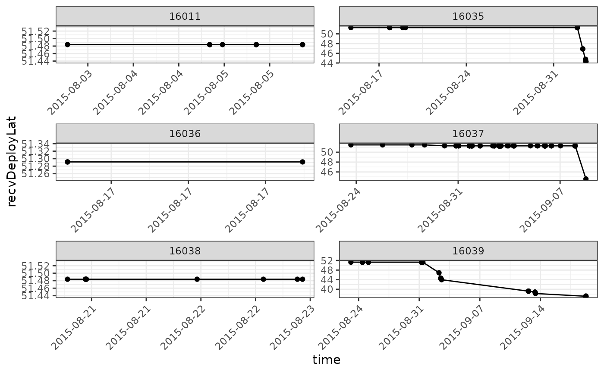
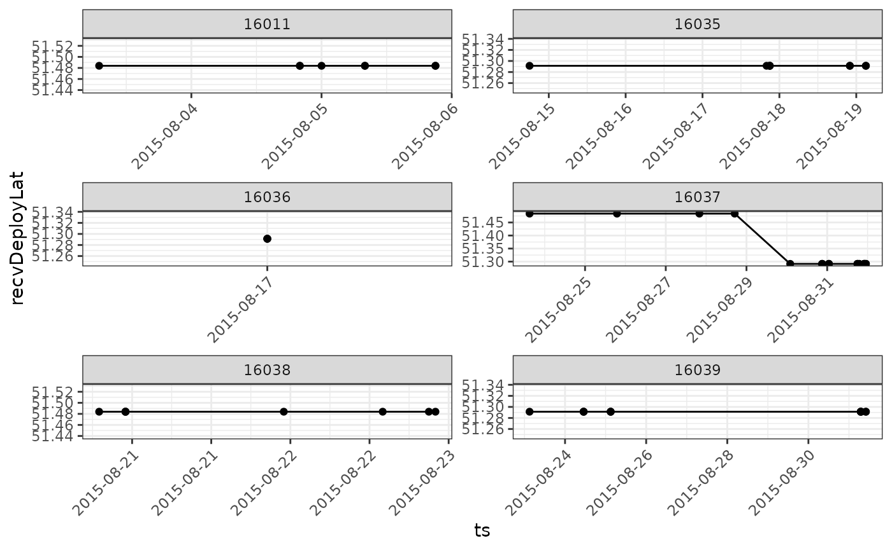
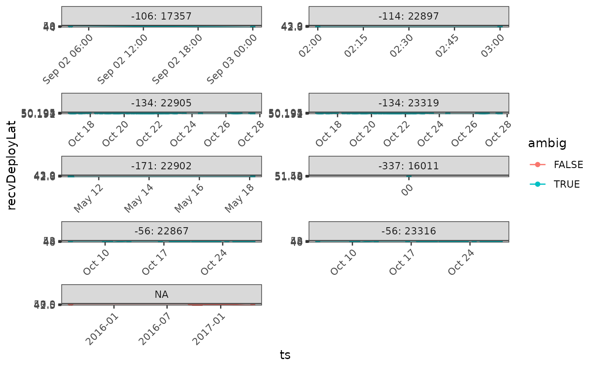
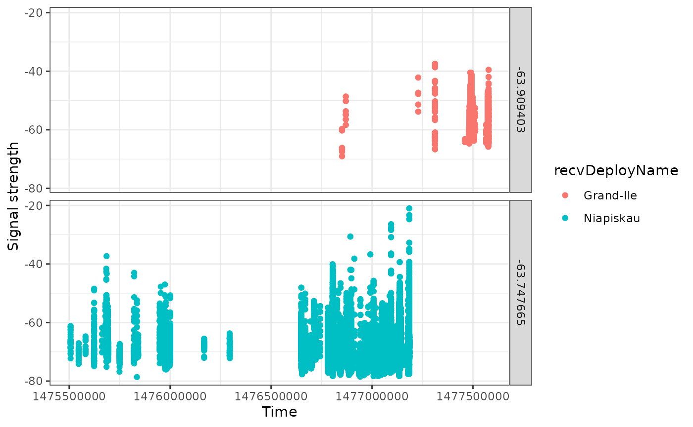
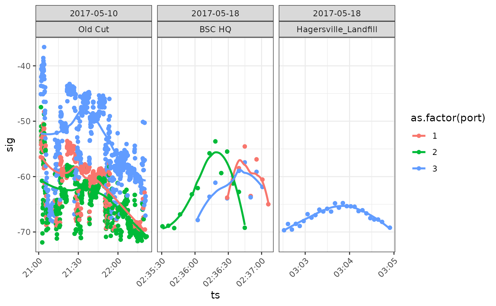
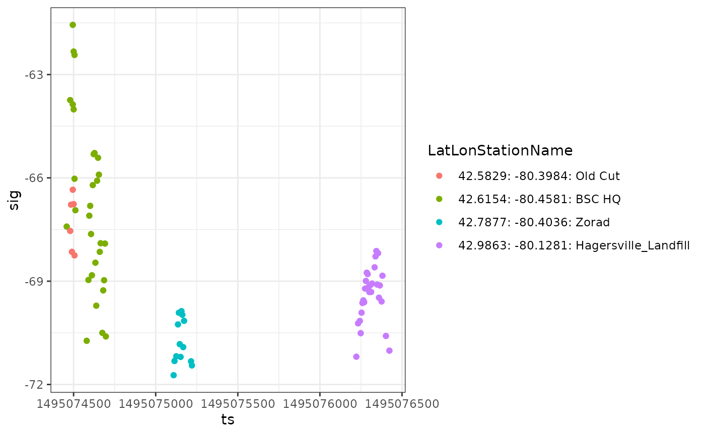
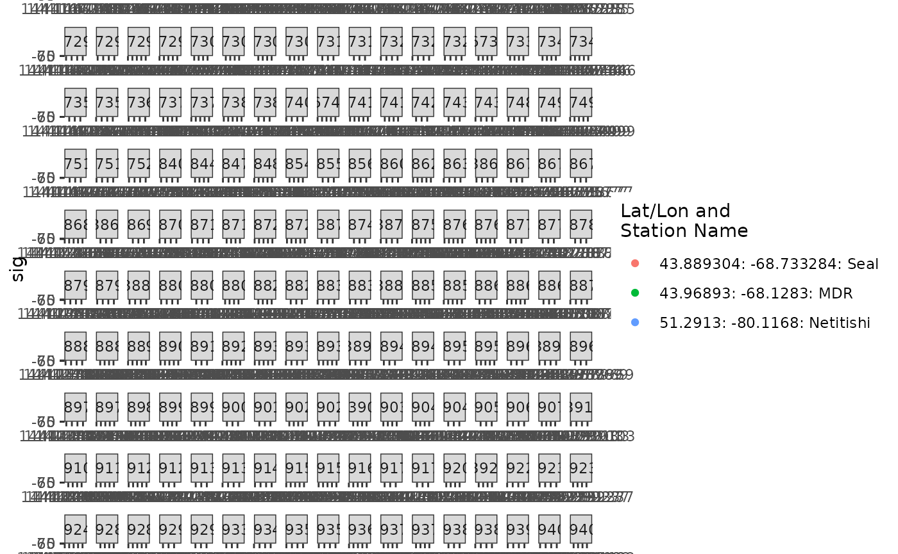
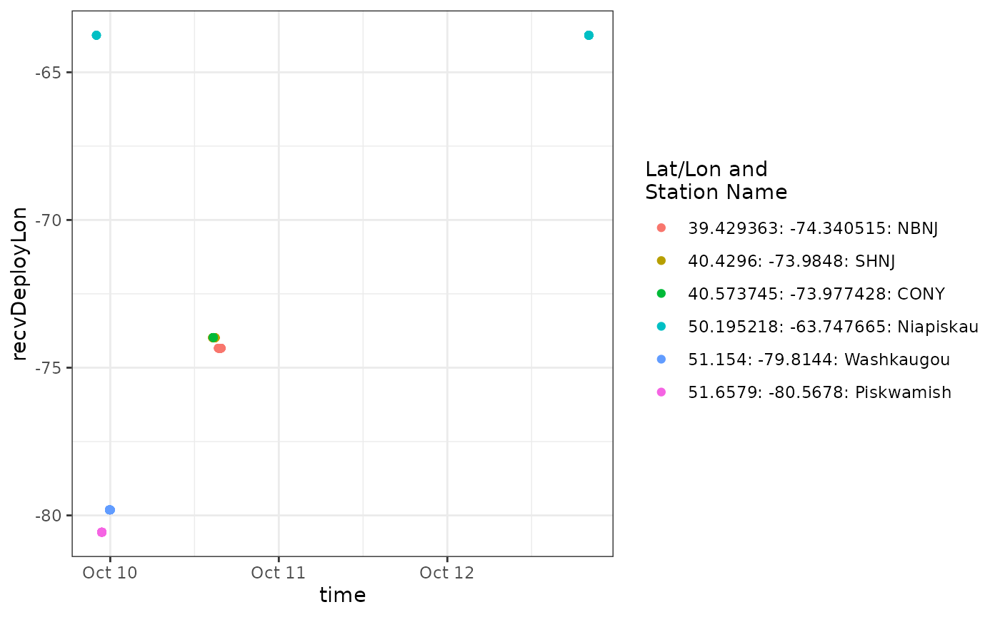
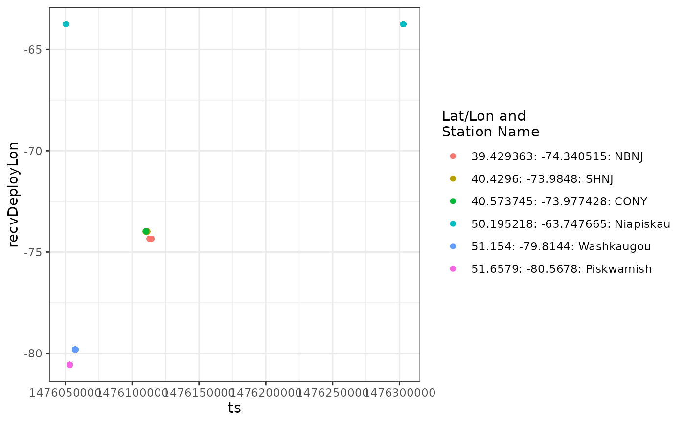
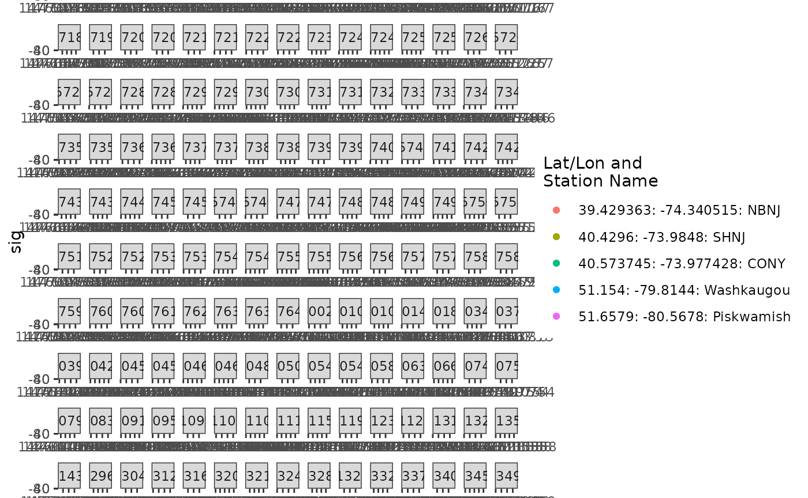

In this chapter we’ll go through checking and cleaning tag detections by by filtering out noisy data, visually exploring your data, and checking ambiguous detections.
Some extra, more advanced topics not addressed in this chapter are available as supplementary articles.
Advanced Topics:
There are three sources of ‘error’ that can result in tag detections appearing in your database that are incorrect.
First, random radio noise (‘static’) can be detected and interpreted to be the transmission of a tag. These are called ‘false positives’.
Second, despite our best efforts to avoid it, duplicate tags are sometimes transmitting in the network at the same time. When two tags are deployed at the same time that have the same ID code, burst interval, and nominal transmit frequency, it results in situations where the detections may belong to either tag. If that happens, we must rely on contextual information to separate them (if we can). We term these ‘Ambiguous tags’.
Third, a tag can appear to be present when two tags are transmitting at the same time that by chance produce a signal that looks like a third tag that is not in fact present. Such tags are most common at roosting sites or breeding colonies, where many tags are transmitting simultaneously. We term these ‘Aliased tags’. We do not deal explicitly with Aliased tags in this chapter; we are working on a way to globally identify them and eliminate them from the data. We mention them here because you may encounter situations with what appear to be highly plausible detections that don’t make biological sense. Please contact us if you think you have some of these Aliased tag detections in your database.
The goal of this chapter is to provide you with the tools you need to check your data for false detections, and remove them from your data. We do so by providing example workflows that deal with ‘false positives’ and ‘ambiguous tags’ in the following steps:
Preliminary Filter
A run is a group of consecutive detections of a tag detected on a single antenna at a single receiver. Very short runs and relatively short runs at noisy stations both have a high probability of being false positive detections. These can be omitted using the motusFilter. However, because you will likely lose some true detections in the process, we also recommend that after a full analysis of your data, you return to these detections and examine them individually, to determine (usually contextually) if they can be considered real.
Examine individual tags
Examine indiviudal tags and determine if runs in those tags are errors
Ambiguous Detections
Determine how many of your tag detections may be ambiguous detections
Remove false detections from your data
Follow the instructions in Chapter 2 to install the following packages before loading, if they are not already installed.
Recall from Chapter 3 that when accessing the sample database, you will need to input motus.sample in the R console as both username and password when prompted by the tagme() user authentication process. This section assumes you have already completed the initial sample data download.
sql.motus <- tagme(176, update = TRUE, dir = "./data/")## Checking for new data in project 176## activity: 0 new batch records to check## nodeData: 0 new batch records to checkFirst, determine which project tags have detections. There are several reasons why deployed tags might not be detected, including:
The tag was not properly activated on deployment. To avoid this, always check that a tag is active using a hand-held receiver before attaching the tag to your study animal and releasing it.
An animal with a properly activated tag might not have passed within range of a receiving station. Study designs that incorporate strategic placement of receivers to meet project goals can improve the probability of a tag being detected.
Missing or incorrect tag deployment metadata in the Motus database can result in the data processing algorithm not ‘looking’ for your tag at the time the tag was deployed, or at all. Please ensure your tag metadata are entered correctly.
Before going further, please check whether any of your tags were deployed more than once, as described in Chapter 4 - Number of deployments per tag. If so, you will need to use tagDeployID or a combination of motusTagID and tagDeployID to uniquely define detections associated with a tag deployment (either will do, but combining the two fields will let you know which tagID is associated with each deployment).
In the sample data, all tags were deployed only once, and so we use the motusTagID as a unique identifier for a tag deployment in all R code throughout these articles
Invariably you will run into some false detections in your tag detection data. Sometimes these may be due to random glitches or noisy radio conditions. The various outputs on the Motus web site are pre-filtered, but data downloaded via the motus R package provides access to all detections, allowing users more control over which detections to keep or omit. Therefore, it is important to filter these out as part of your data cleaning process.
As runs are composed of sequences of hits, the longer the run the more confident we can be that it represents a true detection. However, local conditions at an individual receiver may vary in their exposure to background radio noise/interference. Sites with relatively more background noise may be more prone to generating a high number of very short runs that are in reality spurious data.
There are two filtering options in the motus R package that follow these ideas:
motusFilter found in the runs table and alltags viewfilterByActivity()
Here we will continue with the
motusFiltercolumn, and encourage users to check out the article on In-depth detections filtering for more details on how themotusFilteris calculated and how to customize filtering with thefilterByActivity()function
motusFilter is a column in the runs table and is a good first option for identifying detections that have a higher probability of being false. Currently the motusFilter contains just two values 0 or 1. Runs with a motusFilter of 0 are considered “invalid” (i.e. have a low probability of being true detections) and could therefore be omitted.
## # Source: lazy query [?? x 5]
## # Database: sqlite 3.36.0
## # [/home/runner/work/motus/motus/vignettes/articles/data/project-176.motus]
## hitID runID batchID ts motusFilter
## <int> <int> <int> <dbl> <int>
## 1 45107 8886 53 1445858390. 1
## 2 45108 8886 53 1445858429. 1
## 3 45109 8886 53 1445858477. 1
## 4 45110 8886 53 1445858516. 1
## 5 45111 8886 53 1445858564. 1
## 6 199885 23305 64 1445857924. 1
## 7 199886 23305 64 1445857983. 1
## 8 199887 23305 64 1445858041. 1
## 9 199888 23305 64 1445858089. 1
## 10 199889 23305 64 1445858147. 1
## # … with more rowsTo omit dubious runs (0) and keep only ‘good’ runs (1) identified by motusFilter we filter() them out.
To double check we can filter for short runs in the original alltags view
tbl(sql.motus, "alltags") %>%
select(hitID, runID, batchID, motusTagID, runLen) %>%
filter(runLen <= 3)## # Source: lazy query [?? x 5]
## # Database: sqlite 3.36.0
## # [/home/runner/work/motus/motus/vignettes/articles/data/project-176.motus]
## hitID runID batchID motusTagID runLen
## <int> <int> <int> <int> <int>
## 1 516095 104118 141 16047 3
## 2 516096 104118 141 16047 3
## 3 516097 104119 141 16047 3
## 4 516098 104119 141 16047 3
## 5 516099 104118 141 16047 3
## 6 516100 104119 141 16047 3
## 7 516101 104120 141 16047 2
## 8 516102 104120 141 16047 2
## 9 516132 104133 97 16047 2
## 10 516133 104133 97 16047 2
## # … with more rowsAnd compare this to our newly created filtered table tbl.alltags.sub
## # Source: lazy query [?? x 5]
## # Database: sqlite 3.36.0
## # [/home/runner/work/motus/motus/vignettes/articles/data/project-176.motus]
## # … with 5 variables: hitID <int>, runID <int>, batchID <int>,
## # motusTagID <lgl>, runLen <int>Note that the filters may exclude some true detections in the process. Therefore, we recommend that after a full analysis of your data, you return to these detections and examine them individually, to determine (usually contextually) if they can be considered real.
With that in mind, let’s keep track of the detections we’ve just removed.
Prior to more specific filtering the data, we will perform a few checks, summaries and plots of the data.
In our example, we will need to remove about 150 detections, because there is no geographic data associated with the receiver metadata, and so no way to determine the location of those detections.
For example, we can see which receivers are missing data by filtering by is.na(recvDeployLat) and is.na(recvDeployName)
tbl.alltags.sub %>%
filter(is.na(recvDeployLat) | is.na(recvDeployName)) %>%
select(recvDeployLat, recvDeployLon, recvDeployName, recvDeployID, recv,
recvProjID, recvProjName) %>%
distinct()## # Source: lazy query [?? x 7]
## # Database: sqlite 3.36.0
## # [/home/runner/work/motus/motus/vignettes/articles/data/project-176.motus]
## recvDeployLat recvDeployLon recvDeployName recvDeployID recv recvProjID
## <dbl> <dbl> <chr> <int> <chr> <int>
## 1 NA NA NP mobile 3813 Lotek-280 176
## 2 NA NA NA NA SG-1415BBB… NA
## 3 NA NA NA NA SG-2814BBB… NA
## # … with 1 more variable: recvProjName <chr>Notice that some of these receivers are also missing names.
As more users explore and fix their metadata, these missing values should begin to disappear.
If you don’t have any problems with your data, you can continue on with this walk-through.
However if you have multiple missing recvDeployName you may want to flatten your data and change the names before proceeding. Here we make a new name from the latitude and longitude.
df.alltags.sub <- tbl.alltags.sub %>%
collect() %>% # flatten your data
mutate(recvDeployName = if_else(is.na(recvDeployName),
paste0(recvDeployLat, ":", recvDeployLon),
recvDeployName))If you take this route, remember that in all future examples you’ll want to use your new, flatted data frame
df.alltags.sub, not the un-flattedtbl.alltags.sub
Note: if you have GPS points in your data, you may wish to check out the article on Working with GPS points, particularly the section which details how you might wish to combine create new lat/lons with a combination of recvDeployLat/recvDeployLon and gpsLat/gpsLon'
An initial view of the data is best achieved by plotting. We will show you later how to plot detections on a map, but we prefer a simpler approach first; plotting detections through time by both latitude and longitude. First however, we should simplify the data. If we don’t, we risk trying to plot thousands or millions of points on a plot (which can take a long time).
Simplify the data for plotting
We can simplify the data by summarizing by the runID. If you want to summarize at a finer/coarser scale, you can also create other groups. The simplest alternative is a rounded timestamp variable; for example by using mutate(ts.h = plyr::round_any(ts, 3600). Other options are to just use date (e.g date = as_date(ts)).
Here we create a summary data frame that we can filter to produce different plots
df.plot <- tbl.alltags.sub %>%
filter(tagProjID == 176, # keep only tags registered to the sample project
!is.na(recvDeployLat) | !(recvDeployLat == 0)) %>% # drops data without lon/lat
group_by(motusTagID, runID, recvDeployName, ambigID,
tagDepLon, tagDepLat, recvDeployLat, recvDeployLon) %>%
#summarizing by runID to get max run length and mean time stamp:
summarize(max.runLen = max(runLen, na.rm = TRUE),
ts = mean(ts, na.rm = TRUE), .groups = "drop") %>%
arrange(motusTagID, ts) %>%
collect() %>%
mutate(ts = plyr::round_any(ts, 3600),
ts = as_datetime(ts, tz = "UTC", origin = "1970-01-01"))We would initially plot a subset of tags by either latitude or longitude1, to get an overview of where there might be issues. Here, to simplify the example, we plot only six tags. We avoid examining the ambiguous tags for now.
ggplot(data = filter(df.plot,
motusTagID %in% c(16011, 16035, 16036, 16037, 16038, 16039)),
aes(x = ts, y = recvDeployLat)) +
theme_bw() +
theme(axis.text.x = element_text(angle = 45, vjust = 1, hjust = 1)) +
geom_point() +
geom_path() +
facet_wrap(~ motusTagID, scales = "free", ncol = 2) +
scale_x_datetime(date_labels = "%Y-%m-%d")
Although there don’t seem to be any immediate problems, let’s take a look at the tags showing up around 44 degrees during September. Let’s examine these tags in more detail by examining the runs in the data frame that are associated with detections in September.
tbl.alltags.sub %>%
filter(motusTagID %in% c(16035, 16037, 16039),
recvDeployLat < 44) %>%
collect() %>%
mutate(ts = as_datetime(ts)) %>%
filter(month(ts) == 9) %>%
group_by(recvDeployName, month = month(ts), runLen) %>%
summarize(n = length(ts),
n.tags = length(unique(motusTagID)),
.groups = "drop") %>%
arrange(runLen)## # A tibble: 14 × 5
## recvDeployName month runLen n n.tags
## <chr> <dbl> <int> <int> <int>
## 1 Assateague State Park 9 6 6 1
## 2 FINWR 9 6 6 1
## 3 FINWR 9 10 10 1
## 4 FINWR 9 20 20 1
## 5 Prime Hook 9 23 23 1
## 6 BULL 9 24 24 1
## 7 Prime Hook 9 27 27 1
## 8 Bombay Hook 9 32 32 1
## 9 Prime Hook 9 32 32 1
## 10 Bombay Hook 9 36 36 1
## 11 BULL 9 38 38 1
## 12 Port Maitland 9 42 42 1
## 13 Bombay Hook 9 53 53 1
## 14 FINWR 9 73 73 1Since we have already filtered dubious detections, these remaining ones don’t seem immediately unreliable (all with high runLen). If you are interested, you can re-run the code above, but on the full data frame (tbl(sql.motus, "alltags")) containing run lengths of 2 or 3. You will see that there are likely false positive detections at these sites, that were already eliminated by filtering.
Hypothetically, if we decided that those detections in September were false positives, we could create a data frame that contains the motusTagIDs and runIDs for them.
df.block.1 <- tbl.alltags.sub %>%
filter(motusTagID %in% c(16035, 16037, 16039)) %>%
collect() %>%
mutate(ts = as_datetime(ts)) %>%
filter(month(ts) == 9) %>%
select(motusTagID, runID) %>%
distinct() %>%
collect()Remove them from our plotting data frame
And then plot our data again, having omitted those detections
ggplot(data = filter(df.plot.sub,
motusTagID %in% c(16011, 16035, 16036, 16037, 16038, 16039)),
aes(x = ts, y = recvDeployLat)) +
theme_bw() +
theme(axis.text.x = element_text(angle = 45, vjust = 1, hjust = 1)) +
geom_point() +
geom_path() +
facet_wrap(~ motusTagID, scales = "free", ncol = 2) +
scale_x_datetime(date_labels = "%Y-%m-%d")
The reader is encouraged to explore the rest of the tags within this group, to determine if there are additional false positives.
Before we go further, we need to check to see if any tags have ambiguous detections. If there are, we will need to explore them, and create additional filters to remove detections from our database.
Are any of your tags associated with ambiguous detections?
The clarify() function in the motus R package provides a summary of ambiguities in the detections data. Each ambigID refers to a selection of detections that could belong to one or more (up to 6) motusTagIDs, which are listed in the id1 to id6 columns:
clarify(sql.motus)## ambigID numHits id1 fullID1 id2
## 1 -56 5734 22867 SampleData#272.1:5.3@166.38(M.22867) 23316
## 2 -106 279 17021 Selva#172:6.1@166.38(M.17021) 17357
## 3 -114 86 22897 SampleData#303.1:5.3@166.38(M.22897) 24298
## 4 -134 22749 22905 SampleData#301:5.3@166.38(M.22905) 23319
## 5 -171 2074 22778 RBrownAMWO#308:5.3@166.38(M.22778) 22902
## 6 -337 4 10811 Niles#152:6.1@166.38(M.10811) 16011
## fullID2 id3 fullID3
## 1 SampleData#272:5.3@166.38(M.23316) NA <NA>
## 2 SampleData#172:6.1@166.38(M.17357) NA <NA>
## 3 NEONICS#303:5.3@166.38(M.24298) NA <NA>
## 4 SampleData#301.1:5.3@166.38(M.23319) NA <NA>
## 5 SampleData#308.1:5.3@166.38(M.22902) 24303 NEONICS#308:5.3@166.38(M.24303)
## 6 SampleData#152:6.1@166.38(M.16011) NA <NA>
## id4 fullID4 id5 fullID5 id6 fullID6 motusTagID tsStart tsEnd
## 1 NA <NA> NA <NA> NA <NA> NA NA NA
## 2 NA <NA> NA <NA> NA <NA> NA NA NA
## 3 NA <NA> NA <NA> NA <NA> NA NA NA
## 4 NA <NA> NA <NA> NA <NA> NA NA NA
## 5 NA <NA> NA <NA> NA <NA> NA NA NA
## 6 NA <NA> NA <NA> NA <NA> NA NA NAWe can see that there are six tags with ambiguous detections within this data set. Detections associated with five of the six ambigIDs could belong to one of two tags, and detections associated with one ambigID (-171) could belong to one of three tags. The fullID fields list the project names associated with the duplicate tags (e.g., “SampleData”, “Selva”, “Niles”), along with features of the tags (manufacturer tag ID, burst, and transmit frequency).
Let’s get a data frame of these, and do some plots to see where there may be issues.
df.ambigTags <- tbl.alltags.sub %>%
select(ambigID, motusTagID) %>%
filter(!is.na(ambigID)) %>%
distinct() %>%
collect() %>%
mutate(newID = paste0(ambigID, ": ", motusTagID))Using our df.plot, data frame we can filter these detections.
Create new ids showing links between ambiguous and non-ambiguous tags.
df.plot.ambig <- mutate(df.plot.ambig,
ambig = !is.na(ambigID), # Ambiguous or not? TRUE/FALSE
newID = if_else(ambig, paste0(ambigID, ": ", motusTagID), NA_character_)) Plot the results! We’ll add some information to the plot, showing where (in time) the tags are actually ambiguous. We can then inspect the overall plots (or portions of them) to determine if we can contextually unambiguously assign a detection of an ambiguous tag to a single deployment.
ggplot(data = df.plot.ambig,
aes(x = ts, y = recvDeployLat, colour = ambig)) +
theme_bw() +
theme(axis.text.x = element_text(angle = 45, vjust = 1, hjust = 1)) +
geom_point() +
geom_path() +
facet_wrap(~ newID, scales = "free", ncol = 2)## geom_path: Each group consists of only one observation. Do you need to adjust
## the group aesthetic?
Let’s deal with the easy ones first.
ambigID -337: motusTagIDs 10811 and 16011
tbl.alltags.sub %>%
filter(ambigID == -337) %>%
count(motusTagID, tagDeployStart, tagDeployEnd, tagDepLat, tagDepLon)## # Source: lazy query [?? x 6]
## # Database: sqlite 3.36.0
## # [/home/runner/work/motus/motus/vignettes/articles/data/project-176.motus]
## # Groups: motusTagID, tagDeployStart, tagDeployEnd, tagDepLat
## motusTagID tagDeployStart tagDeployEnd tagDepLat tagDepLon n
## <int> <dbl> <dbl> <dbl> <dbl> <int>
## 1 10811 1414479600 1438585200 39.1 -74.7 4
## 2 16011 1438515600 1450352400 51.5 -80.4 4We can see from the plot that ambiguous tag -337 is ambiguous only at the beginning of the deployment.
We can see from the summary of the tag deployment data that there were only 4 detections, at the exact latitude of deployment of tag 16011, and just before the non-ambiguous detections of motusTagID 16011. So the issue here is simply that the tail end of the deployment of tag 10811 slightly overlaps with the deployment of tag 16011. We can confidently claim these detections as belonging to motusTagID 16011, and remove the ambiguous detections assigned to the other tag.
We’ll create another data frame to keep track of these runs.
# we want the detections associated with the motusTagID that we want to
# ultimately REMOVE from the data frame
df.block.2 <- tbl.alltags.sub %>%
filter(ambigID == -337,
motusTagID == 10811) %>%
select(motusTagID, runID) %>%
distinct() %>%
collect()ambigID -134: motusTagIDs 22905 and 23319
tbl.alltags.sub %>%
filter(ambigID == -134) %>%
count(motusTagID, tagDeployStart, tagDeployEnd,
tagDepLat, tagDepLon, month(ts))## # Source: lazy query [?? x 7]
## # Database: sqlite 3.36.0
## # [/home/runner/work/motus/motus/vignettes/articles/data/project-176.motus]
## # Groups: motusTagID, tagDeployStart, tagDeployEnd, tagDepLat, tagDepLon
## motusTagID tagDeployStart tagDeployEnd tagDepLat tagDepLon `month(ts)` n
## <int> <dbl> <dbl> <dbl> <dbl> <lgl> <int>
## 1 22905 1475337600 1497283200 50.2 -63.7 NA 22279
## 2 23319 1476547200 1498492800 50.2 -63.7 NA 22279Here we have a similar situation, but one that is a bit more complex. Two identical tags were deployed at the same location, shortly after one another. Let’s examine a simple plot.
df.plot <- tbl.alltags.sub %>%
filter(motusTagID %in% c(22905, 23319)) %>%
collect()
ggplot(data = df.plot,
aes(x = ts, y = sig, group = recvDeployName, colour = recvDeployName)) +
geom_point() +
theme_bw() +
labs(x = "Time", y = "Signal strength") +
facet_grid(recvDeployLon ~ .)
It appears that these are overlapping detections, at two sites in proximity to one another. Additional information from the field researchers may enable us to disentangle them, but it is not clear from the data.
We will therefore remove all detections of this ambiguous tag from the database. To do so, we collect the motusTagID that we want to remove.
df.block.3 <- tbl.alltags.sub %>%
filter(ambigID == -134) %>%
select(motusTagID, runID) %>%
distinct() %>%
collect()ambigID -171: motusTagIDs 22778, 22902 and 22403
The ambiguous detections for this tag, which occur in the Great Lakes region, could also belong to motusTagID 22778 from the RBrownAMWO project or motusTagID 24303 from the Neonics project. Let’s take a closer look at these detections.
First, find the deployment dates and locations for each tag.
tbl.alltags.sub %>%
filter(ambigID == -171) %>%
filter(!is.na(tagDeployStart)) %>%
select(motusTagID, tagProjID, start = tagDeployStart, end = tagDeployEnd,
lat = tagDepLat, lon = tagDepLon, species = speciesEN) %>%
distinct() %>%
arrange(start) %>%
collect() %>%
as.data.frame()## motusTagID tagProjID start end lat lon
## 1 22902 176 1475337600 1497283200 50.19278 -63.74528
## 2 22778 82 1477008000 1536451200 45.13535 -67.29323
## 3 24303 146 1494455460 1498861860 42.60600 -80.46900
## species
## 1 Red Knot
## 2 American Woodcock
## 3 White-crowned SparrowAnd plot the ambiguous detections by date and receiver.
df.ambig.171 <- filter(tbl.alltags.sub, ambigID == -171) %>%
collect() %>%
mutate(ts = as_datetime(ts),
date = as_date(ts))
ggplot(data = df.ambig.171, aes(x = ts, y = sig, colour = as.factor(port))) +
theme_bw() +
theme(axis.text.x = element_text(angle = 45, vjust = 1, hjust = 1)) +
geom_point() +
geom_smooth(method = "loess", se = FALSE) +
facet_wrap(date ~ recvDeployName, scales = "free_x")## `geom_smooth()` using formula 'y ~ x'
We see that there are a large number of ambiguous detections on 10 May 2017 at Old Cut (Long Point, Lake Erie, Ontario), consistent with a bird ‘hanging around’. These are almost certainly detections of motusTagID ‘24303’ which was deployed at Old Cut on 10 May 2017. Subsequent detections on the 18th of May are near Old Cut (Bird Studies Canada HQ, Port Rowan, Ontario), and then a location to the North of Old Cut (Hagersville, Ontario). These detections are consistent with a bird departing on migration. Note in particular the pattern in the latter two panels of increasing then decreasing signal strength which indicates a bird is flying through the beam of an antenna.
These detections belong to another project, so we simply remove all detections of that ambiguous tag from our database.
df.block.4 <- tbl.alltags.sub %>%
filter(ambigID == -171) %>%
select(motusTagID, runID) %>%
distinct() %>%
collect()ambigID -114: motusTagIDs 22897 and 24298
Next we look at the ambiguities for ambiguous tag -114.
tbl.alltags.sub %>%
filter(ambigID == -114) %>%
filter(!is.na(tagDeployStart)) %>%
select(motusTagID, tagProjID, start = tagDeployStart, end = tagDeployEnd,
lat = tagDepLat, lon = tagDepLon, species = speciesEN) %>%
distinct() %>%
arrange(start)## # Source: lazy query [?? x 7]
## # Database: sqlite 3.36.0
## # [/home/runner/work/motus/motus/vignettes/articles/data/project-176.motus]
## # Ordered by: start
## motusTagID tagProjID start end lat lon species
## <int> <int> <dbl> <dbl> <dbl> <dbl> <chr>
## 1 22897 176 1475337600 1497283200 50.2 -63.7 Red Knot
## 2 24298 146 1494385200 1498791600 42.6 -80.5 White-crowned SparrowWe again subset these and plot them. An initial plot suggested that all of the detections are of a migratory flight, so we construct a somewhat different plot from the one above, that emphasizes this behaviour better.
df.ambig.114 <- tbl.alltags.sub %>%
filter(ambigID == -114) %>%
mutate(LatLonStationName = paste(recvDeployLat, recvDeployLon, recvDeployName, sep=": ")) %>%
collect()
ggplot(data = df.ambig.114, aes(x = ts, y = sig, colour = LatLonStationName)) +
geom_point() +
theme_bw() 
Notice that the detections are consistent with a migratory departure from the Long Point area (Old Cut Field Station, Lake Erie, Ontario) about a week after the ambiguous tag 24298 was deployed at the same location. This again suggests that these ambiguous detections can be removed from our data because they belong to another project.
df.block.5 <- tbl.alltags.sub %>%
filter(ambigID == -114) %>%
select(motusTagID, runID) %>%
distinct() %>%
collect()ambigID -106: motusTagIDs 17021 and 17357
These two tags pose an interesting problem. There is only a short period of overlap, between mid August 2015 and mid September. One individual is a Grey-cheeked Thrush, tagged in Colombia, the other a White-rumped Sandpiper, associated with the sample project.
tbl.alltags.sub %>%
filter(ambigID == -106) %>%
filter(!is.na(tagDeployStart)) %>%
select(motusTagID, tagProjID, start = tagDeployStart, end = tagDeployEnd,
lat = tagDepLat, lon = tagDepLon, species = speciesEN) %>%
distinct() %>%
arrange(start)## # Source: lazy query [?? x 7]
## # Database: sqlite 3.36.0
## # [/home/runner/work/motus/motus/vignettes/articles/data/project-176.motus]
## # Ordered by: start
## motusTagID tagProjID start end lat lon species
## <int> <int> <dbl> <dbl> <dbl> <dbl> <chr>
## 1 17021 57 1430370000 1442206800 11.1 -74.1 Gray-cheeked Thrush
## 2 17357 176 1439277600 1451114400 51.5 -80.4 White-rumped SandpiperWe plot the ambiguous detections by date to examine the period of overlap.
df.ambig.106 <- tbl.alltags.sub %>%
filter(ambigID == -106) %>%
mutate(ts = as_datetime(ts),
date = as_date(ts)) %>%
collect()
ggplot(data = df.ambig.106,
aes(x = ts, y = sig,
colour = paste(recvDeployLat, recvDeployLon, recvDeployName, sep = ": "))) +
theme_bw() +
geom_point() +
scale_colour_discrete(name = "Lat/Lon and\nStation Name") +
facet_wrap(~ date, scales = "free_x")
Both sets of detections are long run lengths, and look valid (increasing then decreasing signal strength). They are about a day apart, and so it is possible they represent two different birds, or the departure flight of the white-rumped sandpiper from its staging ground. Let’s use the siteTrans() function to examine the flight from Netitishi to MDR/Seal (in the Gulf of Maine).
df.ambig.106 %>%
filter(motusTagID == 17021) %>% # just pick one of the two ambiguous IDs
siteTrans() %>%
filter(rate < 60) %>% # remove the simultaneous detections from Seal and MDR
mutate(total.time = as.numeric(round(seconds_to_period(tot_ts)))) %>%
select(start = recvDeployName.x, end = recvDeployName.y,
date = ts.x, `rate(m/s)` = rate,
dist, total.time = total.time, bearing)## # A tibble: 1 × 7
## start end date `rate(m/s)` dist total.time bearing
## <chr> <chr> <dttm> <dbl> <dbl> <dbl> <dbl>
## 1 Netitishi_… MDR_44,… 2015-09-02 04:18:42 17.1 1.21e6 70879 128.These detections are >1200 km distant from one another, but the flight speed (17 m/s) is consistent with a white-rumped Sandpiper. Given that the Gray-cheeked Thrush tag was near the end of its expected lifetime, we can reasonably claim these detections for our project, and remove the ambiguous detections associated with motusTagID 17021.
df.block.6 <- tbl.alltags.sub %>%
filter(ambigID == -106, motusTagID == 17021) %>%
select(motusTagID, runID) %>%
distinct() %>%
collect()ambigID -56: motusTagIDs 22867 and 23316
These two tags were also both deployed by the same project.
tbl.alltags.sub %>%
filter(ambigID == -56) %>%
filter(!is.na(tagDeployStart)) %>%
select(motusTagID, tagProjID, start = tagDeployStart, end = tagDeployEnd,
lat = tagDepLat, lon = tagDepLon, species = speciesEN) %>%
distinct() %>%
arrange(start)## # Source: lazy query [?? x 7]
## # Database: sqlite 3.36.0
## # [/home/runner/work/motus/motus/vignettes/articles/data/project-176.motus]
## # Ordered by: start
## motusTagID tagProjID start end lat lon species
## <int> <int> <dbl> <dbl> <dbl> <dbl> <chr>
## 1 22867 176 1473176100 1495121700 51.8 -80.7 Pectoral Sandpiper
## 2 23316 176 1475424000 1497369600 50.2 -63.7 Red KnotTag 23316 was deployed by the James Bay Shorebird Project (sample project) about three weeks after tag 22867, which was deployed from a location far to the west.
df.ambig.56 <- tbl.alltags.sub %>%
filter(ambigID == -56) %>%
mutate(sig = ifelse(sig > 0, sig * -1, sig)) %>%
collect()
ggplot(data = df.ambig.56,
aes(x = recvDeployLon, y = ts,
colour = paste(recvDeployLat, recvDeployLon, recvDeployName, sep=": "))) +
theme_bw() +
geom_point() +
scale_colour_discrete(name="Lat/Lon and\nStation Name") 
We can see from the plot that a tag is detected consistently near longitude -65, which is near the deployment location for motusTagID 23316 and after it’s deployment start date, it was also present at -65 during and after detections far to the west. It’s likely all the detections at -65 belong to motusTagID 23316, but it is also clear that anything informative about this ambiguity occurs between about 9-11 October, so let’s zoom in on that part of the data set.
ts.begin <- ymd_hms("2016-10-06 00:00:00")
ts.end <- ymd_hms("2016-10-12 23:00:00")
ggplot(data = filter(df.ambig.56, ts > ts.begin, ts < ts.end),
aes(x = ts, y = recvDeployLon,
colour = paste(recvDeployLat, recvDeployLon, recvDeployName, sep = ": "))) +
theme_bw() +
geom_point() +
scale_colour_discrete(name = "Lat/Lon and\nStation Name") 
We can see that the ambiguous tag was detected consistently at Niapiskau and Grand Ile before and after the period when it was also detected to the north and west (at Washkaugou and Piskwamish) and then to the south (NBNJ, SHNJ, and CONY). We can look at this transition by filtering out the portion of the data not near Niapiskau, and again using the siteTrans function from the motus package.
# other tag is a duplicate
df.56.tmp <- filter(df.ambig.56, !(recvDeployLat == 50.2), motusTagID == 22867)
siteTrans(df.56.tmp) %>%
filter(rate < 60) %>% # get rid of simultaneous detections
mutate(total.time = as.numeric(round(seconds_to_period(tot_ts)))) %>%
select(start = recvDeployName.x,
end = recvDeployName.y,
date = ts.x, `rate(m/s)` = rate,
dist, total.time = total.time, bearing)## # A tibble: 11 × 7
## start end date `rate(m/s)` dist total.time bearing
## <chr> <chr> <dttm> <dbl> <dbl> <dbl> <dbl>
## 1 Piskwami… Washkaug… 2016-10-09 22:49:59 20.4 7.68e4 3767 137.
## 2 Washkaug… SHNJ_40.… 2016-10-10 00:00:42 24.3 1.27e6 52386 157.
## 3 NBNJ_39.… Niapiska… 2016-10-10 15:47:37 7.74 1.46e6 188426 31.4
## 4 Niapiska… Grand-Il… 2016-10-18 04:22:02 43.5 1.16e4 266 -92.2
## 5 Grand-Il… Niapiska… 2016-10-18 04:29:12 0.728 1.16e4 15887 87.7
## 6 Grand-Il… Niapiska… 2016-10-19 04:34:04 0.531 1.16e4 21758 87.7
## 7 Niapiska… Grand-Il… 2016-10-23 01:39:14 5.55 1.16e4 2084 -92.2
## 8 Grand-Il… Niapiska… 2016-10-25 17:57:52 19.3 1.16e4 600 87.7
## 9 Niapiska… Grand-Il… 2016-10-25 21:13:49 0.243 1.16e4 47541 -92.2
## 10 Grand-Il… Niapiska… 2016-10-26 19:43:34 0.758 1.16e4 15254 87.7
## 11 Niapiska… Grand-Il… 2016-10-27 00:03:21 0.246 1.16e4 46941 -92.2The bird made a 14.5 hour (52386/60/60) flight between Washkaugou and SHNJ at a rate of 24 m/s, which is plausible. The researchers involved may have other data to support or refute the inference (e.g. an actual sighting of the Red Knot still in Niapiskau after this flight was recorded) but it seems likely that while one tag remained at sites around longitude -65, another tag made the above migratory flights.
We can make another more detailed plot of signal strength to examine these potential migratory flights more closely:
df.56.tmp <- tbl.alltags.sub %>%
filter(ambigID == -56, recvDeployLon < -70) %>%
mutate(ts = as_datetime(ts),
date = as_date(ts))
ggplot(data = df.56.tmp,
aes(x = ts, y = sig,
colour = paste(recvDeployLat, recvDeployLon, recvDeployName, sep = ": "))) +
theme_bw() +
geom_point() +
scale_colour_discrete(name = "Lat/Lon and\nStation Name") +
facet_wrap(~ date, scales = "free_x")
These look like typical fly-by patterns of increasing and then decreasing signal strength.
This, coupled with overall detection patterns and knowledge of the species, leads us to believe that the ambiguous detections can be reasonably divided between the two individuals; one detected consistently around longitude -65 (23316), and the other migrating SW during the same period (22867).
To address this problem, we need to create two filters - one that excludes ambiguous detections of tag 22867, and one that excludes some detections of 23316. In this instance, we can do this most easily by filtering on motusTagID and recvDeployName.
Tag 23316 was only ever at “Grand-Ile”, “Niapiskau”, and tag 22867 was never detected at those sites. So we exclude all detections not at “Grand-Ile”, “Niapiskau” for motusTag 23316, and do the opposite for tag 22867.
df.block.7 <- tbl.alltags.sub %>%
filter(ambigID == -56,
motusTagID == 23316,
!(recvDeployName %in% c("Grand-Ile", "Niapiskau"))) %>%
select(motusTagID, runID) %>%
distinct() %>%
collect()
df.block.8 <- tbl.alltags.sub %>%
filter(ambigID == -56,
motusTagID == 22867,
recvDeployName %in% c("Grand-Ile", "Niapiskau")) %>%
select(motusTagID, runID) %>%
distinct() %>%
collect()At the beginning of this chapter, we removed all short/noisy detections with a motusFilter of 0, because they are considered to have a high probability of being false positive. Now that we’ve cleaned the data, and are confident in the detections that remain, you might at this point decide to go back and take a closer look at those omitted detections. You could do this, for example, by re-running the various plots described in this chapter (begin with lat/lon by time plots), to see if any of those detections make sense in the context of where the true detections lie. It is up to the user to decide which detections are reasonable in terms of the biology and behaviour of each tagged individual.
To filter the data, we can omit rows in the df.block data frames from the original data using a anti_join(), which removes rows from x (tbl.alltags.sub) which are present in y (df.block).
# combine our df.block data frames into a single dataframe
df.block.all <- bind_rows(df.block.0, df.block.2, df.block.3,
df.block.4, df.block.5, df.block.6, df.block.7,
df.block.8)
df.alltags.sub <- tbl(sql.motus, "alltags") %>%
collect() %>%
anti_join(df.block.all, by = c("runID", "motusTagID"))Now save the local data frame as an RDS file, for use in the next chapter. Recall from Exporting detections in Chapter 3 that the RDS format preserves the R data structure, including time stamps. The other benefit of saving to RDS is that you have the output from a given workflow saved as a flat file, which you can access again with a simple readRDS statement.
saveRDS(df.alltags.sub, file = "./data/dfAlltagsSub.rds")And to read the data in again:
df.alltags.sub <- readRDS("./data/dfAlltagsSub.rds")As an alternative to saving your data as an RDS file, the Motus R package offers functionalities to save your filters directly within your .motus file. Once they are saved in your database, you can do the type of anti_join() as above without having to rely on dataframes or an RDS file to store your data. To learn more about the functions available to work with Motus filters, refer to Appendix D for more details.
df.block.all <- bind_rows(df.block.0, df.block.2, df.block.3,
df.block.4, df.block.5, df.block.6, df.block.7,
df.block.8) %>%
mutate(probability = 0)
# create a new filter with name filtAmbigFalsePos and populate it with df.block.all
tbl.filter <- writeRunsFilter(sql.motus, "filtAmbigFalsePos",
df = df.block.all, delete = TRUE)## Filter records saved
# obtain a table object where the filtered records from tbl.filter.1 have been removed
tbl.alltags.sub <- anti_join(tbl(sql.motus, "alltags"),
tbl.filter,
by = c("runID", "motusTagID"))In these examples we use the latitude/longitude of the receivers as a proxy for tag location: recvDeployLat and recvDeployLon. However, if your tags have GPS, you may wish to use a more precise lat/lon. See Working with GPS points for more advanced examples with GPS.↩︎